MSc Artificial Intelligence dissertation
Learning to Select Actions for Complex Hand Tasks
A comparative study of visuomotor policies and latent world models
Teaching a robot to choose the right hand movement, quickly and reliably.
A comparative study of visuomotor policies and latent world models
Teaching a robot to choose the right hand movement, quickly and reliably.
Graham Pellegrini
Supervised by Prof. Alexiei Dingli
Department of Artificial Intelligence, Faculty of ICT, University of Malta
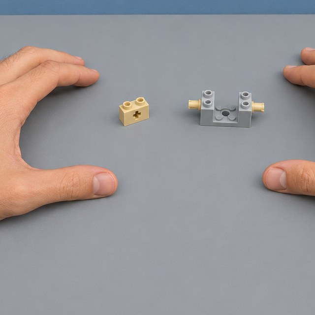
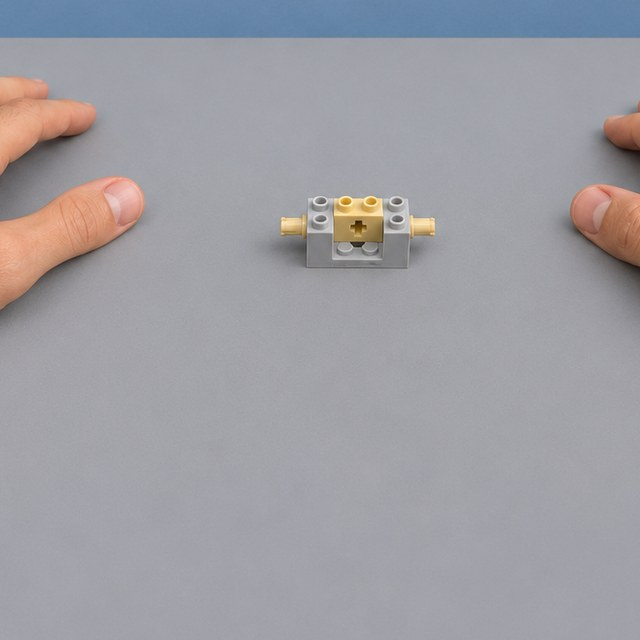
✓Illustrative, AI-edited photos
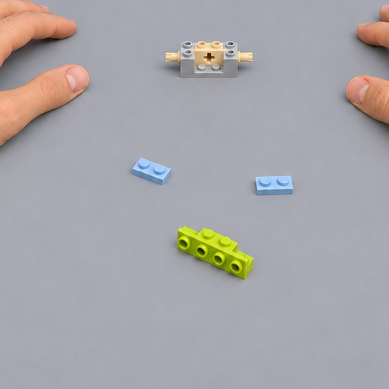
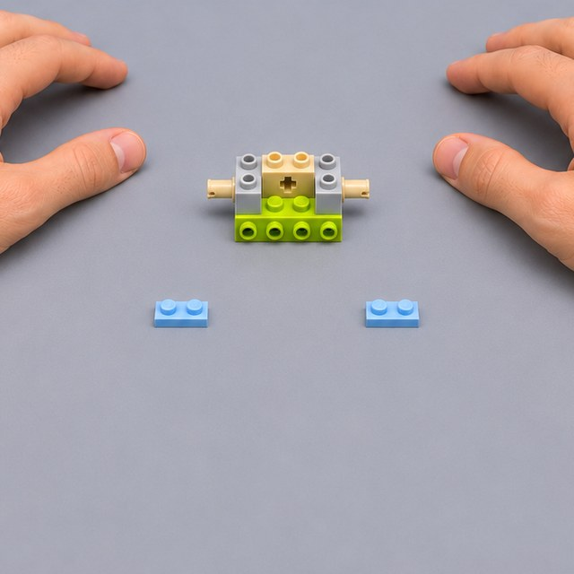
✗Illustrative, AI-edited photos
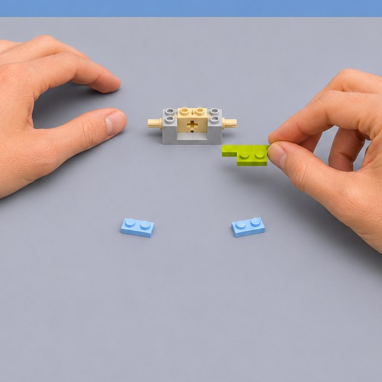
0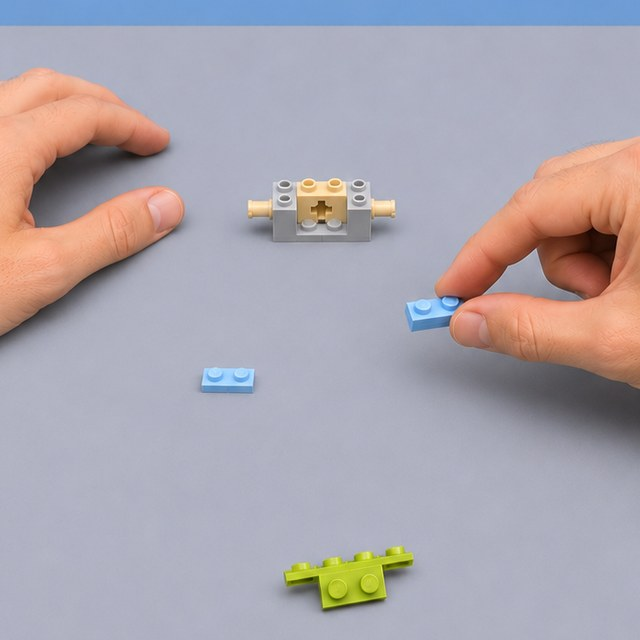
1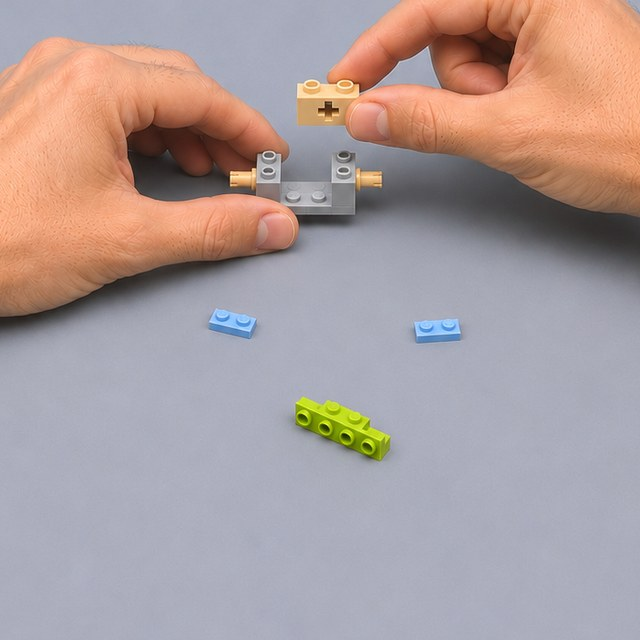
2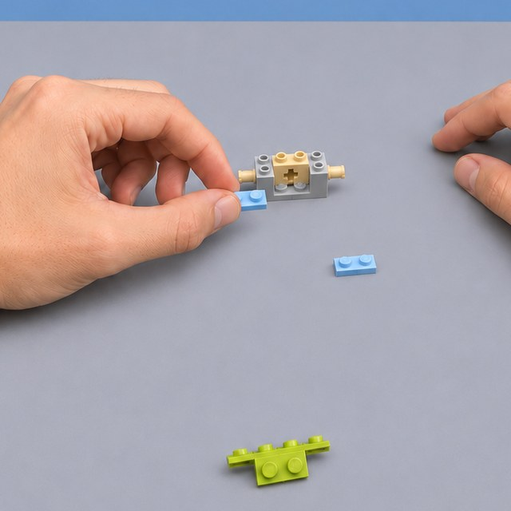
3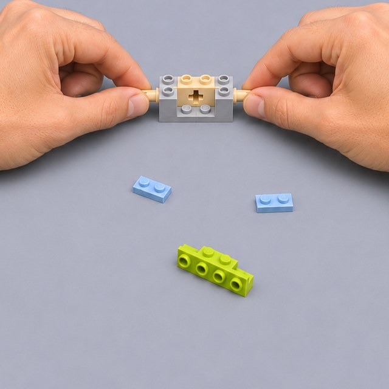
4In 3D space: many possible movements, only a few succeed
Illustrative, AI-edited photos
Illustrative, AI-edited photos
Illustrative, AI-edited photos
Under a controlled offline benchmark, does a frozen world model, acting only as the final decision stage, improve which candidate bimanual hand-motion chunk is chosen from a pool already proposed by ACT or DP?
Under a controlled offline benchmark, does a frozen world model, acting only as the final decision stage, improve which candidate bimanual hand-motion chunk is chosen from a pool already proposed by ACT or DP?
In plain wordsIn an offline benchmark can a frozen world model, used as an external selector, pick a better hand movement from the policy's candidates?
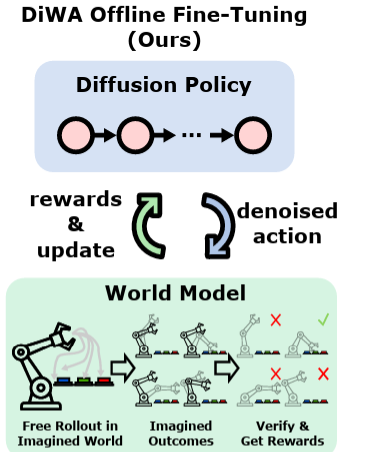
Adapted from Chandra et al. (2025), Fig. 1 (c)
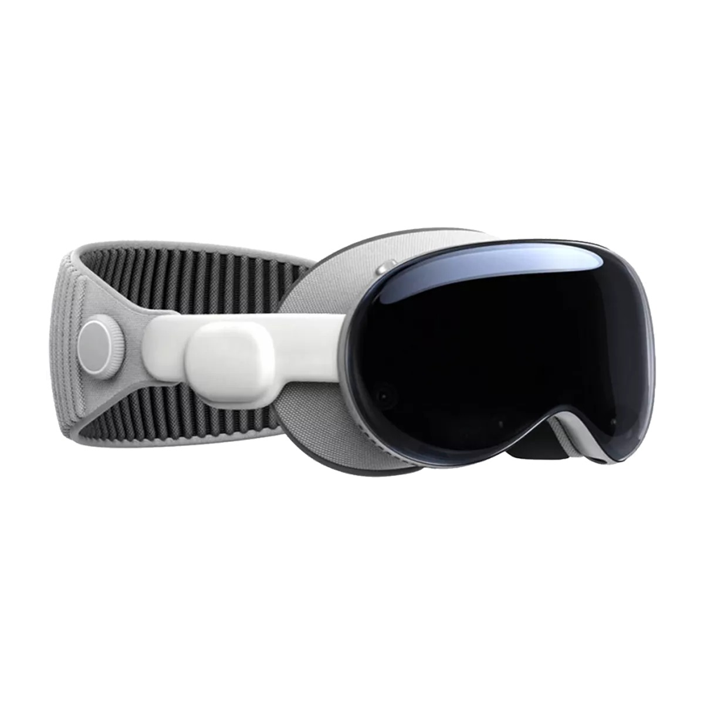
Recorded on Apple Vision Pro
both hands tracked at 30 fps
Cross-entropy method, started from the policy's output (inspired by TD-MPC2).
| Model | What it is | Error change | Correlation |
|---|---|---|---|
| V-JEPA2-AC | Frozen video encoder, my action head | −5.98% | +0.16 |
| LeWM | Small model trained end to end by me | −10.1% | −0.51 |
| DexWM | Frozen DINOv2 encoder, my predictor | +0.57% | not measured |
| PointWorld proxy | Control: weakened motion input | +0.27% | not measured |
| V-JEPA2, no action | Control: motion input set to zero | 0.00% | 0.00 |
Finetuning improves the policy. Selection improves the choice.
−5.98% translation error
Research question answered
We showed that a frozen world model, used only as an external selector at inference time, brings the chosen movement closer to the real human motion.
Graham Pellegrini
graham.pellegrini@um.edu.mt
Almost the same gain, and only the rollout scorer uses LeWM's learned dynamics. So the gain comes from how typical the motion is, not from prediction.
Spearman rank correlation: how well the world model's ranking of the candidates matches their true ranking. Gain says how much error drops; correlation says whether the ranking is right.
V-JEPA2-AC: per window, candidate scores against candidate errors (K = 5, pooled seeds). LeWM: across windows, score margin against true improvement (+0.54 on a 512-window check, -0.51 on all 7,607). The no-action control ties every score.
| Seed 42 | Seed 43 | Seed 44 | |
|---|---|---|---|
| Baseline translation error | 0.1142 | 0.1178 | 0.1191 |
| V-JEPA2-AC, Branch 2 | -6.41% | -6.09% | -5.46% |
| V-JEPA2 without action input | 0.00% | 0.00% | 0.00% |
| PointWorld proxy | +0.50% | +0.23% | +0.07% |
| LeWM rollout (unvalidated) | -10.10% | -10.06% | -10.12% |
Three seeds are a basic robustness check, not proof of stability. DexWM is single-seed by a cost decision of roughly 121 extra GPU-hours.
Seed 42, Branch 2, nested pools. More candidates raise the ceiling, but they come from the same policy and capture stays about flat, so the scorer, not K, limits the gain.
Windows sorted by baseline error, K = 8, Branch 2. Translation error rises 5.81% in Q1. Confidence gating does not help, because the score gap has a correlation of -0.002 with baseline error. A state-change-targeted windowing removes most of the reversal.
Translation error = average, over the 16 steps and both wrists, of the root-mean-square position error per axis (metres)
Gain = mean error of the chosen candidate ÷ mean error of candidate 0, minus 1
Rotation error is the same idea for orientation: the mean geodesic angle in degrees. Error is always measured against the recorded human motion, which the world model never sees.
| Obj. | Status | Basis |
|---|---|---|
| 1 | Fully | Three-branch benchmark implemented as designed and used for every family reported |
| 2 | Partly | Local exposure matched, externally pretrained backbones carry an advantage not equalised |
| 3 | Within tested configurations | Whether and when selection helps determined for every combination, one positive, a likely explanation for each other |
Objectives 4 and 5 are in the Conclusion chapter's objective table. Every non-positive-route explanation is the study's own interpretation, not independently proven.
Success rate (%), CALVIN, three seeds, the authors' released checkpoints. Within 5 points on every task; base policy within 7 (Q&A 3). The behaviour-cloning weight was set to the paper's values after a run at zero collapsed two tasks.
Seed 42, 7,607 windows, ranked by true translation error. Candidate 0 is spread evenly, like a random pick. The world model finds the best candidate about 1.8 times as often as chance.